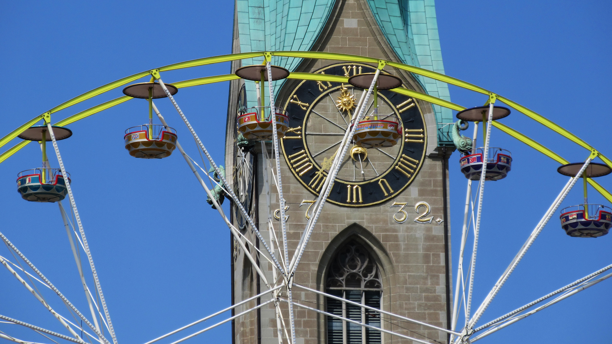

전국 어디에나 있는 롯데마트이긴 한데, 이 롯데마트가 제철고에서는 한마당만 건너면 바로 갈 수 있는 곳인데다 어릴때부터 지곡에서 살아온 학생들에게는 '동네 마트'와 동치인 곳이기 때문에 학생들이 매우 자주 이용하게 된다. 당연히 과자, 음료수는 기본 품목이고 롯데마트 맞은 편의 롯데마트 소유 건물에는 사우나, 미용실, 우리은행, 국민은행, 대구은행, 서점, 비디오&만화방 등등 온갖 가게들이 입점해 있어서 학교에서 돈 있어도 못하는 것들은 이곳에 오면 할수 있다고 보면 된다. 학교에서도 11시 까지[9]야자를 하는데다가 기숙사 학생들까지 있다 보니 수업이나 야자 시작할때 자리에 앉아만 있으면 된다는 식이라 점심시간이나 저녁시간 심지어 쉬는시간에도 학교 밖으로 외출하는 것 자체는 막지 않는다. 그렇다 보니 매우 자주 이용하게 된다. 아래에서 후술할 생일 잔치 문화나 그런것들도 다 롯데마트가 근거리에 위치하고 있어서 가능한 것. 교사들 역시 많은 이들이 지곡에 살기때문에 자주 만날 수 있다. 자습시간에 마트에서 학생 만난 썰을 푸는 교사들이 여럿이 있는 편. 정수기 위치(롯데리아 옆, 내부 아딸 데스크, 맞은편 은행건물 2층 직원식당, 한마당 1,3층)를 파악해두면 `라면각` 피크타임시 유용하다.[10] 
2017년 4월 27일 기준, 배스킨라빈스와 롯데리아는 사라지고 짬뽕타임이 생겼다. 몇 달 뒤 배스킨라빈스는 애드빌에 다시 재 입점 했다. 2017년 11월 11일 기준, 롯데마트의 짬뽕타임이 사라졌다. 2018년 3월 기준 아직 새 가게가 들어오지 않은 상태이다. 현재 또다른 가게가 들어오는지 공사중이다. 2018년 5월 기준 가게가 아닌 갤러리가 들어왔다. 2021년 1월 기준 롯데마트 1층에서 포항제철중학교 교복과 포항제철고등학교 교복을 팔고 있다!